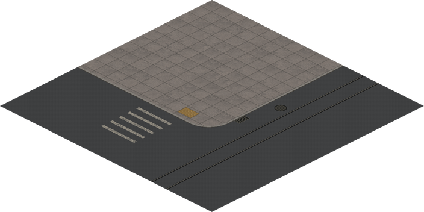
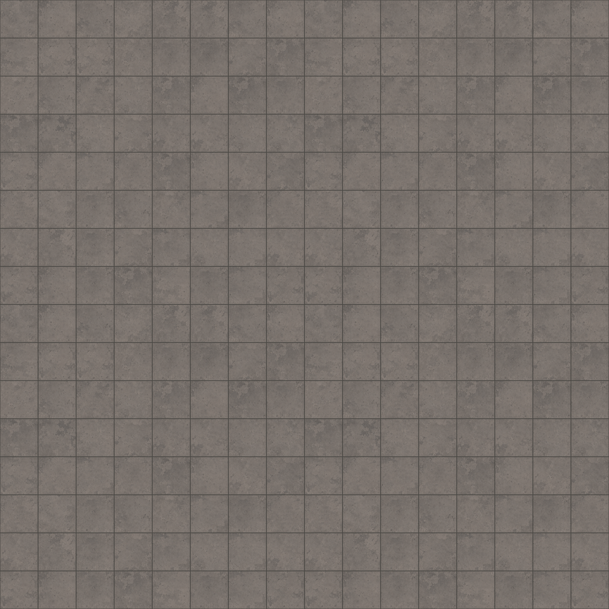
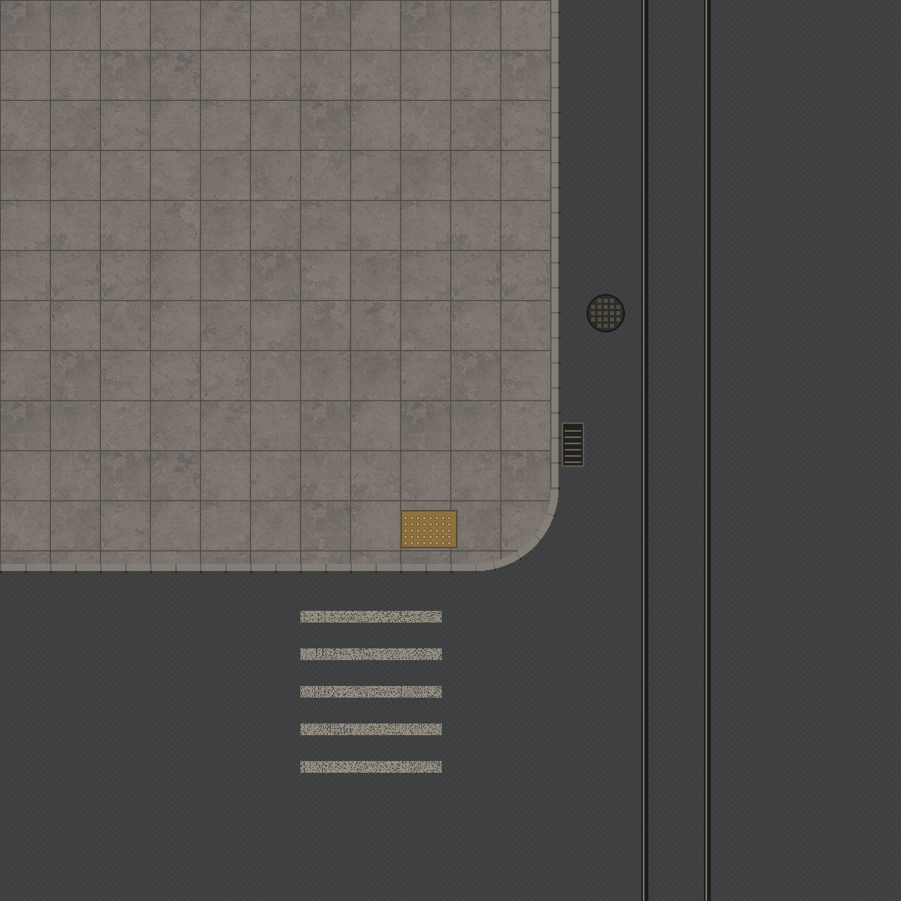

SOURCE ONLY. No native scene, collision change, owner acceptance or production admission. The finite eight-slab material repeat remains visible over enough distance.
Review and limits | Source and export hashes


